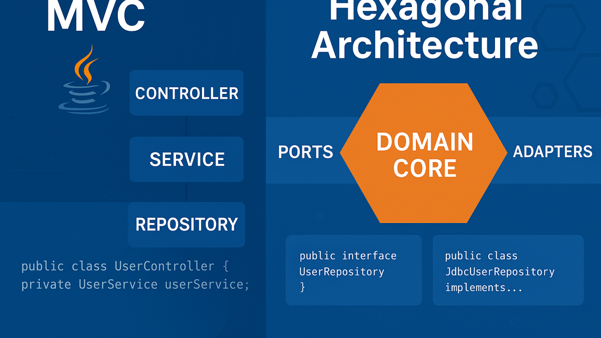

Do MVC para a Arquitetura Hexagonal.
Do MVC para a Arquitetura Hexagonal: Uma Transição Necessária

Desenvolvedor Java Sênior | Especialista em Back-end | Jakarta, Spring Boot, REST APIs, Docker | Engenheiro Químico
24 de julho de 2025
Por que inventaram a Interface?
No início da programação orientada a objetos, os desenvolvedores buscavam uma forma de criar sistemas mais flexíveis e fáceis de evoluir. Surgiu então a ideia de “interface”: um contrato que define o que uma classe deve fazer, mas não como ela faz. Isso permitiu separar o “o que” do “como”, facilitando a troca de implementações sem afetar o restante do sistema.
Imagine um sistema de pagamentos: você pode ter uma interface Pagamento e várias implementações — cartão, boleto, pix. O código que usa a interface não precisa saber qual implementação está por trás, apenas que ela cumpre o contrato.
Essa ideia é a base da Arquitetura Hexagonal. Ao colocar interfaces (portas) entre o núcleo da aplicação e o mundo externo (adaptadores), garantimos que a lógica de negócio não dependa de detalhes de infraestrutura. Assim, mudamos bancos, APIs ou frameworks sem mexer no coração do sistema — exatamente o que as interfaces sempre buscaram proporcionar.
Introdução
Durante muitos anos, o padrão MVC (Model-View-Controller) foi a principal escolha para estruturar aplicações web. Ele é simples, direto e fácil de ensinar. Mas conforme os sistemas crescem e as demandas mudam, muitos desenvolvedores se deparam com a necessidade de evoluir para arquiteturas mais flexíveis, como a Arquitetura Hexagonal (Ports and Adapters).
Essa transição, embora poderosa, traz confusões e desafios reais de entendimento.
O que é o MVC (Model-View-Controller)
O MVC separa a aplicação em três responsabilidades principais:
- Model: Representa os dados e regras de negócio.
- View: Camada de apresentação.
- Controller: Lida com a entrada do usuário e coordena Model e View.
Essa estrutura funciona bem para aplicações simples e monolíticas. O problema começa quando o negócio exige integração com múltiplos serviços, testes de unidade eficazes, trocas de UI, APIs, filas, eventos etc.
Por que repensar o MVC tradicional
- O Controller acaba assumindo responsabilidades demais.
- Dificuldade de isolar a lógica de negócio para testes.
- Forte acoplamento com frameworks web (Spring MVC, JSF, etc).
- Problemas na manutenção com o tempo.
- Camadas da aplicação conhecem demais umas às outras.
Introduzindo a Arquitetura Hexagonal
A Arquitetura Hexagonal, proposta por Alistair Cockburn, reorganiza o sistema com foco no domínio e na inversão de dependências. Ela separa a lógica central (o núcleo da aplicação) de tudo que é externo, através de portas (interfaces) e adaptadores (implementações).
Componentes principais
- Domínio / Núcleo: Lógica pura da aplicação (independente de banco, web, etc).
- Portas: Interfaces de entrada (driven) e saída (driving).
- Adaptadores: Controladores HTTP, repositórios, mensagens etc.
Essa arquitetura permite:
- Testar o domínio sem precisar de banco ou servidor web.
- Substituir frameworks com impacto mínimo.
- Ter múltiplas interfaces para o mesmo núcleo (REST, CLI, gRPC)* [Vide rodapé].
- Clareza entre regra de negócio e infraestrutura.
Um exemplo simples
Em MVC
@RestController
public class PedidoController {@Autowired PedidoService service;
@PostMapping("/pedidos")
public ResponseEntity<Pedido> criar(@RequestBody PedidoDTO dto) {
return ResponseEntity.ok(service.criar(dto));
}
}Em Hexagonal
public interface PedidoUseCase {Pedido criar(PedidoDTO dto);
}
public class PedidoApplicationService implements PedidoUseCase { private PedidoRepository repo; public Pedido criar(PedidoDTO dto) {// lógica de negócio aqui
}
}E no adaptador REST:
@RestController
public class PedidoRestAdapter { private final PedidoUseCase useCase;@PostMapping("/pedidos")
public ResponseEntity<Pedido> criar(@RequestBody PedidoDTO dto) {
return ResponseEntity.ok(useCase.criar(dto));
}
}Os desafios da transição
- Desapego da estrutura em camadas (controller -> service -> repository)
- Aprender a nomear portas, adaptadores e entidades de forma expressiva
- Separar regras de negócio reais de lógica de infraestrutura
- Evitar duplicação entre DTOs, entidades e objetos de domínio
- Dominar a inversão de dependência com interfaces e injeção
- Reeducar a equipe para pensar em termos de casos de uso
Conclusão
Migrar do MVC tradicional para a Arquitetura Hexagonal é uma mudança de mentalidade. Exige esforço, mas traz benefícios significativos em projetos complexos e de longo prazo.
Não se trata apenas de trocar nomes ou empacotar camadas de forma diferente. É um compromisso com uma arquitetura centrada no domínio, desacoplada e com maior foco na longevidade da aplicação.
Aos poucos, você perceberá que:
- Seus testes ficam mais rápidos e significativos.
- Seu código se torna mais expressivo e reutilizável.
- Seu sistema se adapta mais facilmente a mudanças externas.
A pergunta não é mais “posso fazer isso com MVC?”, mas sim: “minha lógica de negócio depende de algo que deveria ser externo?”
Autor: Christian V. Uhdre Mulato (GitHub)
LinkedIn: linkedin.com/in/chmulato
O que são essas tecnologias?
REST: Um estilo de arquitetura para APIs que usa HTTP para comunicação entre sistemas, geralmente em formato JSON.
CLI: Command Line Interface, ou seja, interface de linha de comando, onde o usuário interage com o sistema por comandos de texto.
gRPC: Um framework moderno de comunicação remota criado pela Google, baseado em HTTP/2 e Protobuf, eficiente para integração entre serviços distribuídos.